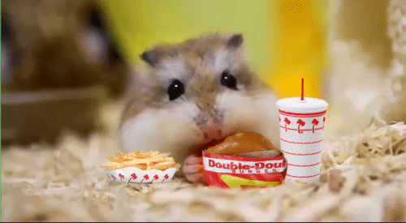
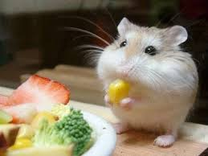
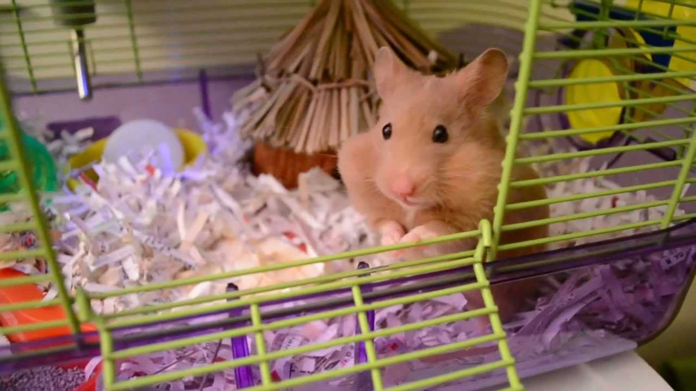

Know What To Feed your Hamster
The easiest way to make sure your hamster’s diet provides everything he needs is to buy the best prepared food you can find. Then supplement its diet with pieces of fresh fruits and veggies, throwing in an occasional mealworm or cricket. A varied diet is as important to hamsters as it is to people.

Types of Food
Pellets
Pellets are a food where the ingredients are ground up, mixed, and formed into little pieces. The requirement to gnaw on pellets and the balanced nutrition of pellets make them a suitable part of your pet’s diet.
Mixed Seeds & Grain
Mixed seeds & grain are just like they sound, a food mixture of seeds and grains. Some mixed foods include a variety of dried fruits, nuts, and seeds. This type of food provides a variety of choices for your hamster to enjoy and is an excellent part of his diet.
Timothy Hay & Alfalfa
Timothy hay, alfalfa or a mix of the two are a nice addition to the diet. In the wild, hamsters are grass eaters and may enjoy nibbling on some hay. Not all will eat it, but it is worth a try.
When should you feed a hamster?
There is some disagreement as to when you should give your hamster its food, with a lot of people thinking that it’s best to feed a hamster in the evening when they are active. That’s not necessarily true. In the wild hamsters come out of their burrows at night, and this is when they search for food. However, this is mainly for protection from daytime predators.
There can be no thought of finishing for ‘aiming for the stars.’ Both figuratively and literally, it is a task to occupy the generations. And no matter how much progress one makes, there is always the thrill of just beginning.
When feeding, it’s important to remember that you should never leave uneaten food to rot; provide fresh food at each feeding time. You should also provide fresh water each day and make sure the drinking bottle is cleaned thoroughly at least once a week. If your tap water is high in chlorine then it’s a good idea to give your hamster filtered water to drink.
Much like domestic hamsters in their cage, wild hamsters collect food in their cheek pouches then store it to eat later. Hamsters wake several times during the day to snack on the food they have stored. Even though they are not in the wild, your hamster will also enjoy snacking throughout the day, so make sure they have enough food to do this.
How much should you feed your hamster?
The PDSA suggests that you should feed a Syrian hamster 10g of dry hamster food twice a day. Of course you are going to need to take note of what your hamster eats as they don’t all have exactly the same appetite. Surprisingly, when it comes to the question of how much do dwarf hamsters eat, the answer is, about the same as Syrian hamsters. The metabolism of dwarf hamsters is a lot faster!
 A cute short-haired Syrian hamster ready to beg for food.Extras
Fresh Foods
To add some variety and added nutrition there are many fresh foods your companion may like. Try acorns, apples, bananas, green beans, broccoli, cabbage, carrots, cauliflower, celery, corn, zucchini, cucumbers, grapes, kale, oranges, peas, spinach, sweet potatoes, and turnips. The key with fresh food is to supply it in small portions since hamsters store away excess food. Rotten food is not something you want in your pet’s cage.
Dietary Supplements
Commercial hamster food is supposed to have all the nutritional requirements necessary for a healthy pet, but supplements are a good way to guarantee a well balanced diet. Dietary supplements are available with vitamins, minerals, and calcium that come in flavors a hamster will enjoy.